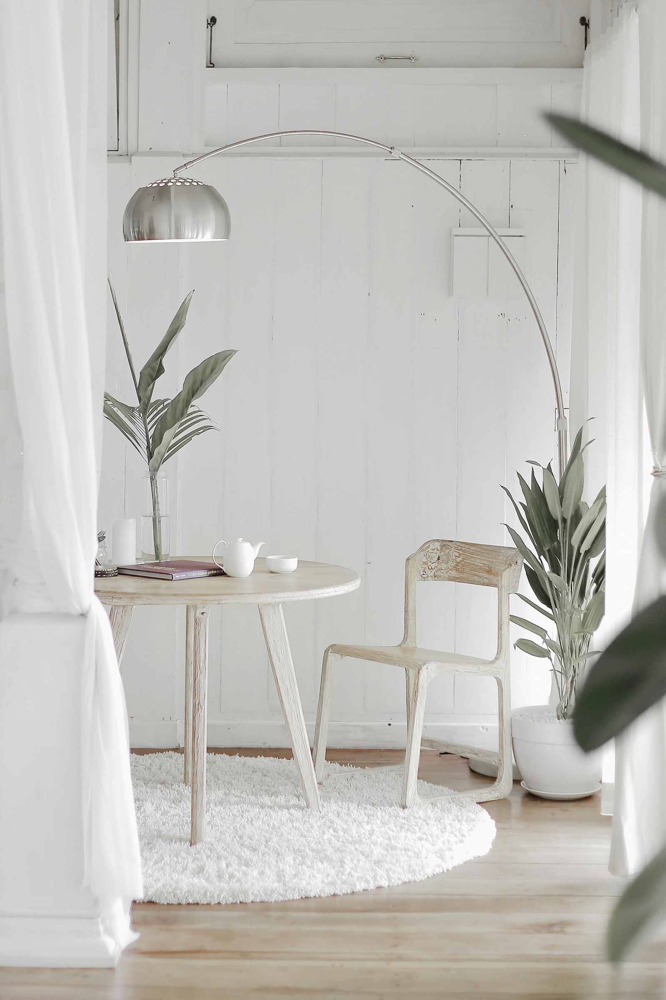

The founder
Ivy Zhang
Ivy spent the better part of a decade inside one of Boston's oldest family offices, running the private side of three principal households. Wardrobes, travel, residences, the relocations that carried families between coasts and across two continents. The hundred small decisions that compound into what a well-run life looks like from the inside.
LEY opened in 2026 to bring that same quality of attention to a carefully chosen set of outside clients. The studio stays small on purpose — no more than six concurrent engagements a season, and never a project handed off once it has been scoped. When you hire Ivy, you are hiring Ivy.
Between seasons she reads, cooks slowly, and occasionally teaches one studio hour a week at a Boston hospitality programme that asked and would not stop asking.
- Years on principal households
- 10
- Concurrent clients, by design
- 6
- Active cities
- Boston · New York · Milan
- Longest running engagement
- 7 years
Ivy Zhang Founder · LEY Studio